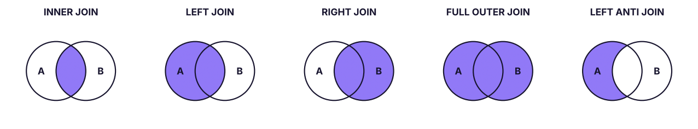
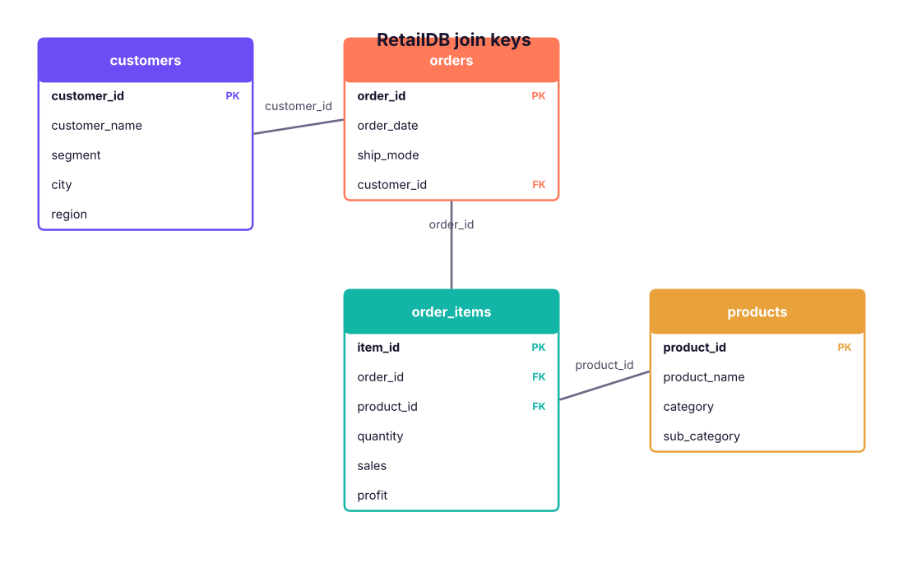

Combine tables with INNER, LEFT, RIGHT, FULL OUTER, CROSS and SELF joins, find missing matches with anti-joins, avoid the classic join mistakes (row explosion, filters in ON vs WHERE), and answer a full set of business questions on the retail database.
● SQL class 4✦ SQL Server 2022, 2026Intermediate⏱ 150 min
In a normalised database (Lesson 2) customer details live in customers, products in products, and orders in orders and order_items. To answer "sales by customer segment and product category" you must join them back together on their keys. A join is SQL's version of XLOOKUP (Excel Lesson 7) and pandas merge().
A tiny example first
Two small tables make every join type easy to see:
SQL
CREATETABLE students (student_id INTPRIMARYKEY, name VARCHAR(20));
INSERTINTO students VALUES (1, 'Asha'), (2, 'Ravi'), (3, 'Meera'), (4, 'Kabir');
CREATETABLE enrolments (student_id INT, course VARCHAR(20));
INSERTINTO enrolments VALUES (1, 'SQL'), (1, 'Python'), (2, 'Excel'), (5, 'Power BI');
SELECT'students'AS t, COUNT(*) AS n FROM students UNIONALLSELECT'enrolments', COUNT(*) FROM enrolments;
Asha (1) has two enrolments, Ravi (2) has one, Meera (3) and Kabir (4) have none, and enrolment for student 5 has no matching student (an "orphan" row).

The join types as Venn diagrams. Shaded areas are the rows returned (A = left table, B = right table).
INNER JOIN: only matches
SQL
SELECT s.student_id, s.name, e.course
FROM students AS s
INNERJOIN enrolments AS e
ON e.student_id = s.student_id
ORDERBY s.student_id, e.course;
Result
student_id
name
course
1
Asha
Python
1
Asha
SQL
2
Ravi
Excel
3 rows × 3 columns
Asha appears twice because she has two matching enrolments. Meera, Kabir and the orphan enrolment disappear.
LEFT (OUTER) JOIN: everything from the left
SQL
SELECT s.student_id, s.name, e.course
FROM students AS s
LEFTJOIN enrolments AS e
ON e.student_id = s.student_id
ORDERBY s.student_id, e.course;
Result
student_id
name
course
1
Asha
Python
1
Asha
SQL
2
Ravi
Excel
3
Meera
NULL
4
Kabir
NULL
5 rows × 3 columns
Every student is kept; where there is no match, the right-hand columns are NULL.
RIGHT JOIN: everything from the right
SQL
SELECT e.student_id, s.name, e.course
FROM students AS s
RIGHTJOIN enrolments AS e
ON e.student_id = s.student_id
ORDERBY e.student_id;
Result
student_id
name
course
1
Asha
SQL
1
Asha
Python
2
Ravi
Excel
5
NULL
Power BI
4 rows × 3 columns
Every enrolment is kept, including student 5 who has no name. A RIGHT JOIN is just a LEFT JOIN with the tables swapped; most people write LEFT JOINs for consistency.
FULL OUTER JOIN: everything from both
SQL
SELECT s.student_id AS s_id, s.name, e.student_id AS e_id, e.course
FROM students AS s
FULLOUTERJOIN enrolments AS e
ON e.student_id = s.student_id
ORDERBYCOALESCE(s.student_id, e.student_id), e.course;
Result
s_id
name
e_id
course
1
Asha
1
Python
1
Asha
1
SQL
2
Ravi
2
Excel
3
Meera
NULL
NULL
4
Kabir
NULL
NULL
NULL
NULL
5
Power BI
6 rows × 4 columns
Matched rows, plus unmatched students, plus unmatched enrolments. Useful for reconciliation: comparing two systems' lists to see what is missing on each side.
Anti-join: rows with no match
SQL
SELECT s.student_id, s.name
FROM students AS s
LEFTJOIN enrolments AS e ON e.student_id = s.student_id
WHERE e.student_id ISNULL;
Result
student_id
name
3
Meera
4
Kabir
2 rows × 2 columns
"Students not enrolled in anything." The same result with NOT EXISTS is shown in Lesson 10.
CROSS JOIN: every combination
SQL
CREATETABLE sizes (size VARCHAR(5));
INSERTINTO sizes VALUES ('S'), ('M'), ('L');
CREATETABLE colours (colour VARCHAR(10));
INSERTINTO colours VALUES ('Black'), ('White');
SELECT c.colour, z.size
FROM colours AS c
CROSSJOIN sizes AS z
ORDERBY c.colour, z.size;
2 colours × 3 sizes = 6 rows: a Cartesian product. Use it on purpose (all product–month combinations for a report grid, a calendar × store table); never by accident.
SELF JOIN: a table joined to itself
SQL
CREATETABLE team (emp_id INT, name VARCHAR(20), manager_id INT);
INSERTINTO team VALUES (1, 'Varun', NULL), (2, 'Asha', 1), (3, 'Ravi', 1), (4, 'Meera', 2), (5, 'Kabir', 2);
SELECT e.name AS employee, m.name AS manager
FROM team AS e
LEFTJOIN team AS m ON m.emp_id = e.manager_id
ORDERBY e.emp_id;
The same table appears twice with different aliases (e for employee, m for manager). LEFT JOIN keeps Varun, who has no manager.
How many rows will a join return?
Join
Rows returned
INNER
Sum over matches; a key matching m rows on the left and n on the right produces m × n rows
LEFT
Every left row at least once (more if it matches several right rows)
RIGHT
Every right row at least once
FULL
Matches + unmatched left + unmatched right
CROSS
Left rows × right rows
Joins on the retail database

Join paths in RetailDB. Follow the keys: customers → orders → order_items → products.
Two tables
SQL
SELECT o.order_id, o.order_date, c.customer_name, c.segment, c.city
FROM orders AS o
INNERJOIN customers AS c ON c.customer_id = o.customer_id
ORDERBY o.order_date DESC, o.order_id;
Result
order_id
order_date
customer_name
segment
city
IN-2025-03197
2025-12-31
Vivaan Patel
Home Office
Bengaluru
IN-2025-03198
2025-12-31
Neha Fernandes
Consumer
Bhubaneswar
IN-2025-03199
2025-12-31
Aarav Patel
Home Office
Jaipur
IN-2025-03200
2025-12-31
Kabir Rao
Home Office
Pune
IN-2025-03192
2025-12-30
Ananya Bose
Consumer
Bengaluru
IN-2025-03193
2025-12-30
Ananya Nair
Consumer
Ahmedabad
IN-2025-03194
2025-12-30
Krishna Iyer
Consumer
Bengaluru
IN-2025-03195
2025-12-30
Ishaan Shah
Corporate
Bhubaneswar
3,200 rows × 5 columns (first 8 shown)
Four tables
SQL
SELECT c.segment,
p.category,
COUNT(DISTINCT o.order_id) AS orders,
ROUND(SUM(oi.sales), 0) AS sales,
ROUND(SUM(oi.profit), 0) AS profit
FROM order_items AS oi
JOIN orders AS o ON o.order_id = oi.order_id
JOIN customers AS c ON c.customer_id = o.customer_id
JOIN products AS p ON p.product_id = oi.product_id
GROUPBY c.segment, p.category
ORDERBY c.segment, sales DESC;
Result
segment
category
orders
sales
profit
Consumer
Technology
727
76,891,232
9,074,795
Consumer
Furniture
749
17,031,585
-279,832
Consumer
Office Supplies
909
4,680,475
704,297
Corporate
Technology
452
45,607,235
5,223,370
Corporate
Furniture
443
10,323,095
-285,209
Corporate
Office Supplies
570
3,183,289
488,994
Home Office
Technology
339
33,939,946
3,357,358
Home Office
Furniture
319
7,487,173
-253,113
Home Office
Office Supplies
391
2,269,540
321,503
9 rows × 5 columns
JOIN on its own means INNER JOIN. Start from the table at the most detailed level (the grain: here, one row per order item) and join outward to the lookup tables.
Case study: questions for the Head of Sales
Case studyQ1. Which customers have never placed an order?
Marketing wants to send them a welcome-back offer.
SQL
SELECT c.customer_id, c.customer_name, c.city, c.segment
FROM customers AS c
LEFTJOIN orders AS o ON o.customer_id = c.customer_id
WHERE o.order_id ISNULLORDERBY c.customer_id;
Result
customer_id
customer_name
city
segment
C0057
Meera Patel
Bhubaneswar
Consumer
C0113
Sneha Shah
Guwahati
Home Office
C0153
Nikhil Das
Delhi
Consumer
C0316
Joseph Mehta
Patna
Corporate
C0376
Sneha Kulkarni
Kolkata
Consumer
C0401
Neha Kulkarni
Kolkata
Corporate
C0404
Nikhil Fernandes
Lucknow
Corporate
C0507
Ananya Singh
Hyderabad
Home Office
C0524
Sai Mehta
Pune
Consumer
C0539
Harpreet Sharma
Jaipur
Consumer
C0704
Zoya Patel
Mumbai
Consumer
C0711
Vikram Reddy
Bhubaneswar
Consumer
15 rows × 4 columns (first 12 shown)
Case studyQ2. Which products have never been sold?
SQL
SELECTCOUNT(*) AS products_never_sold
FROM products AS p
LEFTJOIN order_items AS oi ON oi.product_id = p.product_id
WHERE oi.item_id ISNULL;
Result
products_never_sold
0
1 rows × 1 columns
Case studyQ3. Top 10 customers by 2025 sales, with their city and segment
SQL
SELECTTOP10
c.customer_name, c.city, c.segment,
COUNT(DISTINCT o.order_id) AS orders_2025,
ROUND(SUM(oi.sales), 0) AS sales_2025
FROM customers AS c
JOIN orders AS o ON o.customer_id = c.customer_id
JOIN order_items AS oi ON oi.order_id = o.order_id
WHERE o.order_date >= '2025-01-01'AND o.order_date < '2026-01-01'GROUPBY c.customer_id, c.customer_name, c.city, c.segment
ORDERBY sales_2025 DESC;
Result
customer_name
city
segment
orders_2025
sales_2025
Joseph Shah
Pune
Consumer
5
872,896
Aarav Mehta
Bengaluru
Consumer
6
835,933
Kavya Iyer
Delhi
Consumer
3
821,696
Vivaan Verma
Mumbai
Home Office
2
757,989
Sneha Khan
Ahmedabad
Consumer
3
756,586
Pooja Nair
Pune
Consumer
4
700,790
Farhan Khan
Kochi
Corporate
2
648,834
Ananya Iyer
Chennai
Consumer
4
636,502
Meera Fernandes
Chennai
Consumer
4
614,306
Neha Fernandes
Pune
Consumer
2
588,041
10 rows × 5 columns
Case studyQ4. Which region × category combinations lose money on discounted Furniture?
SQL
SELECT c.region,
p.sub_category,
COUNT(*) AS lines,
ROUND(AVG(oi.discount), 2) AS avg_discount,
ROUND(SUM(oi.profit), 0) AS profit
FROM order_items AS oi
JOIN orders AS o ON o.order_id = oi.order_id
JOIN customers AS c ON c.customer_id = o.customer_id
JOIN products AS p ON p.product_id = oi.product_id
WHERE p.category = 'Furniture'AND oi.discount > 0GROUPBY c.region, p.sub_category
HAVINGSUM(oi.profit) < 0ORDERBY profit;
Result
region
sub_category
lines
avg_discount
profit
South
Tables
100
0.25
-407,431
West
Tables
90
0.26
-369,074
East
Tables
73
0.27
-318,641
North
Tables
74
0.28
-301,656
North
Bookcases
82
0.28
-283,651
South
Bookcases
81
0.27
-263,943
East
Bookcases
80
0.27
-248,275
West
Bookcases
80
0.26
-216,090
North
Chairs
53
0.21
-76,380
West
Chairs
60
0.19
-71,006
South
Chairs
58
0.19
-60,298
East
Chairs
46
0.17
-31,667
16 rows × 5 columns (first 12 shown)
Case studyQ5. How does actual selling price compare with the list price?
SQL
SELECT p.category,
ROUND(SUM(oi.sales), 0) AS actual_sales,
ROUND(SUM(oi.quantity * p.list_price), 0) AS list_value,
ROUND(100.0 * (1 - SUM(oi.sales) / SUM(oi.quantity * p.list_price)), 1) AS avg_discount_given_pct
FROM order_items AS oi
JOIN products AS p ON p.product_id = oi.product_id
GROUPBY p.category
ORDERBY avg_discount_given_pct DESC;
Result
category
actual_sales
list_value
avg_discount_given_pct
Furniture
34,841,853
41,094,510
15.2
Office Supplies
10,133,304
10,963,700
7.6
Technology
156,438,413
168,811,900
7.3
3 rows × 4 columns
Common join mistakes
1. Row explosion (fan-out)
Joining two "many" tables on a shared key multiplies rows. If you join order_items to another table with several rows per order (for example a payments table with instalments), each item is repeated for each payment and SUM(sales) is inflated. Always ask: what is one row of each table, and is the key unique on one side? Check with COUNT(*) before and after the join, or aggregate each table to the same grain first (Lesson 10).
2. Ambiguous column names
SELECT order_id FROM orders JOIN order_items ON … fails: "Ambiguous column name 'order_id'". Prefix columns with the table alias (o.order_id). Do it for every column in multi-table queries.
3. Filtering an outer join in WHERE
A condition on the right table placed in WHERE removes the NULL rows and silently turns a LEFT JOIN into an INNER JOIN:
SQL
-- Intended: all students, with their SQL course if anySELECT s.name, e.course
FROM students AS s
LEFTJOIN enrolments AS e ON e.student_id = s.student_id
WHERE e.course = 'SQL'; -- wrong: drops students without SQL
Result
name
course
Asha
SQL
1 rows × 2 columns
SQL
SELECT s.name, e.course
FROM students AS s
LEFTJOIN enrolments AS e
ON e.student_id = s.student_id
AND e.course = 'SQL'-- right: condition in ON keeps every studentORDERBY s.student_id;
Result
name
course
Asha
SQL
Ravi
NULL
Meera
NULL
Kabir
NULL
4 rows × 2 columns
4. Joining on the wrong or non-unique key
Joining customers to orders on city instead of customer_id creates nonsense matches. Join on keys, and check the relationship (1:1, 1:N) you expect.
5. NULL keys never match
NULL = NULL is UNKNOWN, so rows with a NULL key never match in any join. Clean or default keys first if that matters.
TipJoin check-list
What is the grain (one row = ?) of each table? 2. Which key connects them, and is it unique on one side? 3. Do I need unmatched rows (LEFT/FULL) or only matches (INNER)? 4. Did the row count change as expected? 5. Are filters on outer-joined tables in ON or WHERE on purpose?
Older join syntax you may see
SQL
-- Implicit join (comma join), pre-1992 style: works but avoidSELECT o.order_id, c.customer_name
FROM orders o, customers c
WHERE o.customer_id = c.customer_id;
Forgetting the WHERE turns it into a CROSS JOIN. Use explicit JOIN … ON.
Summary
Key takeaways
INNER: only matching rows. LEFT: all left rows + matches (NULLs where none). RIGHT: the mirror. FULL: everything. CROSS: every combination. SELF: a table with itself (aliases).
Anti-join: LEFT JOIN … WHERE right.key IS NULL finds rows with no match.
Join from the most detailed table outward, on keys, with aliases on every column.
Watch for row explosion, ambiguous columns, and filters on the right table in WHERE (move them to ON).
Joins = XLOOKUP / Power Query Merge / pandas merge / Power BI relationships.
Quick quiz6 questions · tap an answer to check it
1. Table A has 4 rows, B has 3. A CROSS JOIN returns:
Answer: D. A Cartesian product returns 4 × 3 rows.
2. Which join lists every customer, including those with no orders?
Answer: B. LEFT JOIN keeps every row from the left table.
3. How do you find products that were never ordered?
Answer: B. A left anti-join returns left rows with no match.
4.FROM students s LEFT JOIN enrolments e ON … WHERE e.course = 'SQL' behaves like:
Answer: B. The WHERE condition on the right table discards the unmatched (NULL) rows.
5. What is a self join used for?
Answer: A. The same table is used twice with different aliases.
6. After joining order_items to a payments table with 2 instalments per order, SUM(sales) doubled. What happened?
Answer: B. Joining two many-sided tables multiplies rows; aggregate to the same grain first.
ExerciseJoin practice
(1) List each order with customer name, city and the number of items in the order. (2) For each customer segment, show the share of sales from each category (%). (3) Find customers who bought Technology but never Furniture. (4) Using team, show each manager with the number of direct reports.
Show solution
SQL
-- (1)SELECT o.order_id, c.customer_name, c.city, COUNT(oi.item_id) AS items
FROM orders o JOIN customers c ON c.customer_id = o.customer_id
JOIN order_items oi ON oi.order_id = o.order_id
GROUPBY o.order_id, c.customer_name, c.city;
-- (2)SELECT c.segment, p.category,
ROUND(100.0 * SUM(oi.sales) / SUM(SUM(oi.sales)) OVER (PARTITIONBY c.segment), 1) AS pct_of_segment
FROM order_items oi JOIN orders o ON o.order_id = oi.order_id
JOIN customers c ON c.customer_id = o.customer_id JOIN products p ON p.product_id = oi.product_id
GROUPBY c.segment, p.category; -- the window function is explained in Lesson 12-- (3)SELECTDISTINCT c.customer_id, c.customer_name
FROM customers c JOIN orders o ON o.customer_id = c.customer_id
JOIN order_items oi ON oi.order_id = o.order_id JOIN products p ON p.product_id = oi.product_id
WHERE p.category = 'Technology'AND c.customer_id NOTIN (SELECT o2.customer_id FROM orders o2 JOIN order_items oi2 ON oi2.order_id = o2.order_id
JOIN products p2 ON p2.product_id = oi2.product_id WHERE p2.category = 'Furniture');
-- (4)SELECT m.name AS manager, COUNT(e.emp_id) AS direct_reports
FROM team m LEFTJOIN team e ON e.manager_id = m.emp_id
GROUPBY m.emp_id, m.name HAVINGCOUNT(e.emp_id) > 0;
Interview cornerQuestions you may be asked
Q: Explain the different types of joins.
INNER returns matches; LEFT/RIGHT keep all rows from one side with NULLs where unmatched; FULL keeps all rows from both; CROSS returns every combination; SELF joins a table to itself.
Q: Table A has 5 rows with id 1 repeated twice, B has 3 rows with id 1 repeated three times. How many rows does an inner join on id return (other ids unmatched)?
2 × 3 = 6 rows.
Q: How do you find records in one table but not another?
LEFT JOIN … WHERE right.key IS NULL, NOT EXISTS, or EXCEPT (Lesson 9).
Q: What is the difference between putting a condition in ON vs WHERE for a LEFT JOIN?
In ON it only limits which right rows match (all left rows stay); in WHERE it filters the final result and removes unmatched left rows.
Practise more online
Free, trusted places to test yourself on this topic. Links open the original site in a new tab.